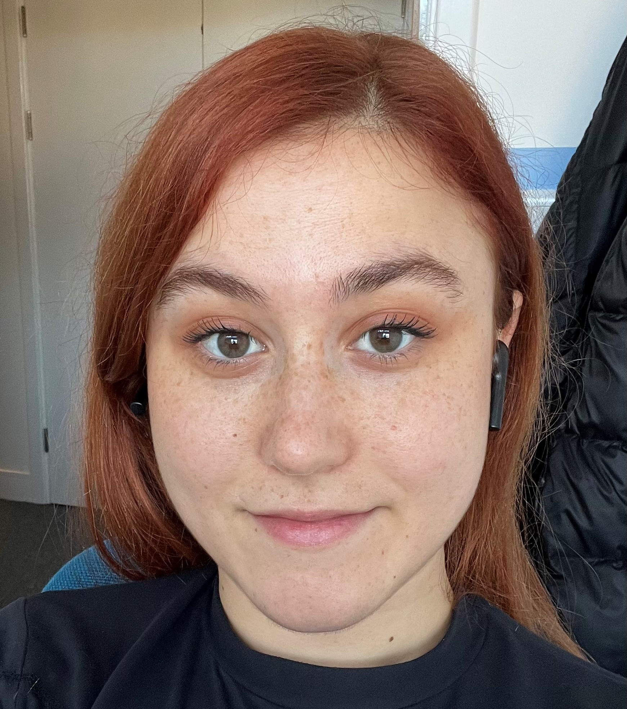
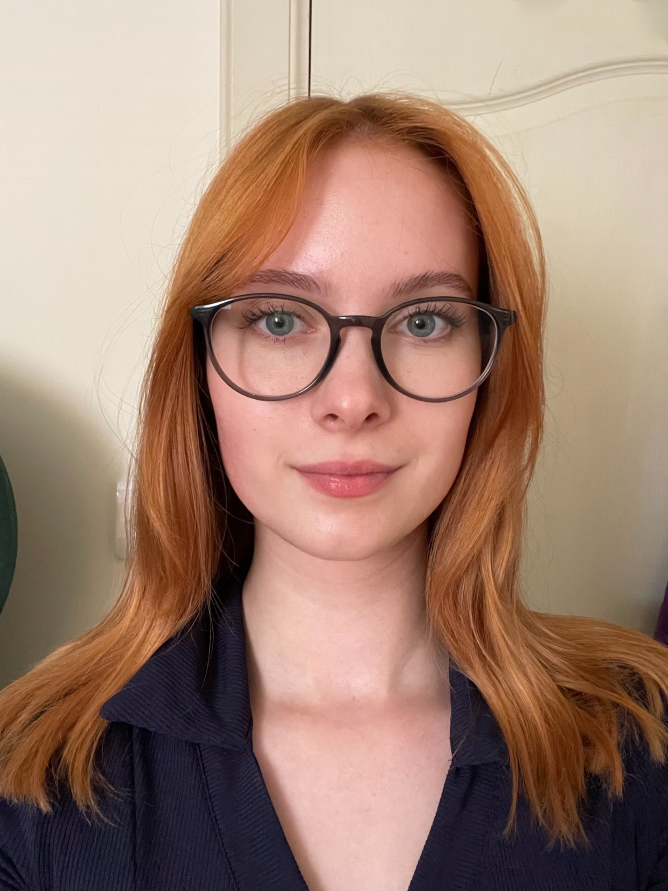

Neuroscience of Cognition and Speech - NeuroCogS

Research interests: Speech comprehension is a dynamic and context-sensitive process. I use neuroimaging to understand how cortical analysis of language adapts to different contexts, goals and social environments. I am also deeply interested in using current neuroimaging methods for assessment, early diagnosis, and remediation of developmental and acquired disorders of language. All current projects
 PhD student - Maria Garcia de Soria BazanResearch interests: I have a deep passion for developmental and cognitive neuroscience and the intricacies of brain development from infancy to early childhood and adulthood. I studied Psychology (BSc) and Neuroscience (MSc) at the University of Granada (Spain), joined the University of York as a Research Assistant (2021-2023) and am now a PhD student in the University of Aberdeen. My work focuses on the development of Executive Functions and its neural substrates during infancy, specifically Attention and Working Memory during the first 3 years of life. My PhD is focused on the interplay between music training, speech processing, and cognitive functions, with a practical goal of understanding how music training can also help children with their reading abilities. Current Projects: Music and Reading
 PhD student - Irina Guliaeva
PhD student - Irina GuliaevaResearch interests: I am a BSc Psychology and MSc Neuroimaging Cardiff University graduate with an interest in language comprehension and its neural underpinnings. I have experience working in developmental and clinical research at UCL and King's College London as a research assistant. Currently, as a PhD student funded by EASTBIO programme, I will combine several neurophysiological measures to improve our understanding of how language structures are processed in the brain, and explore the parallels between human cognition and artificial intelligence. Current Projects: Human-Model-Priming PhD student - Pepita Alex
Research interests: I am passionate about the predictive processing framework within psychological research, particularly its applications to language and cognition. My work focuses on how contextual factors modulate cognitive processes, which is a key aspect of understanding the Bayesian brain. I hold a BA in Natural Sciences from the University of Cambridge (2020-2023), where I also worked as a Research Assistant (2023-2024). I completed an MRes at the University of Aberdeen and am now pursuing a PhD, combining EEG and eye-tracking to investigate how goals influence reading in naturalistic settings. Current Projects: Goal oriented language processing  Research Assistant - Marta Brzeska
Research interests: I am an MA Psychology and Counselling undergraduate at the University of Aberdeen. I am interested in mental well-being as well as cognitive neuroscience, particularly in understanding the underlying mechanisms of regions responsible for language production and comprehension. Currently, I am volunteering as a research assistant on several ongoing projects at the NeuroCogS lab, including data collection through EEG and eye tracking. Current Projects: Goal oriented language processing
Current Research
Goal oriented language processing
The aim of this research strand is to understand how cortical language processing at multiple levels (perceptual, lexico-semantic and syntactic) is shaped by the listener’s/reader's communicative goals. Addressing this question is key to updating current models of cortical language analysis. To address this question, we use EEG and naturalistic story listening/reading. Project collaborators: Dr Anastasia Klimovich-Gray, Pepita Alex, Dr Agnieszka Konopka.
Music and Reading
The goal of this project is to relate reading performance in young readers (5-7 year olds) to their neural signatures of speech and music processing, music training and key executive skills. We will explore the hypothesis that musical training can facilitate cortex-to-music and cortex-to-speech entrainment and have beneficial effects for reading skills. In the long term this work will help to develop intervention tools for stimulating normal phonological awareness in children who struggle with reading. Project collaborators: Mari Garcia de Soria Bazan, Dr Anastasia Klimovich-Gray (supervisor), Dr Brian Mathias (co-supervisor), Dr Anne Keitel (co-supervisor). Funders: PhD Studentship from the School of Psychology, Aberdeen to Mari Garcia de Soria Bazan.
Human-Model-Priming
This is a collaborative project between the Computer Science and Psychology Departments in the University of Aberdeen. The key purpose of this study is to compare syntactic priming effects generated by human participants to that in AI systems that model language processing (such as Large Language Models - LLMs). We plan to understand the extent to which LLMs can learn to encode structure in language and whether resulting representations are similar to the human ones. Project collaborators: Dr Arabella Sinclair, Dr Agnieszka Konopka, Dr Anastasia Klimovich-Gray, Dr Nika Adamian. Funders: Aberdeen University, Internal Funding to Pump-Prime Research and Research Networks to all collaborators.
Neural2Speech
The goal of neural2speech is to build a multimodal contrastive neural network model trained on both neuroimaging input (fMRI and MEG) and speech output. Can we use tools of deep learning to accurately decode speech content from neural brain activity? Addressing this issue is critical for restoring communication in people with speech motor impairments. At the same time, assessing the quality of the perceived speech from brain recordings can provide better understanding of specific linguistic processes affected by a given impairment and provide clinical neuroscience with invaluable assessment tools. Project collaborators: PI, primary supervisor Prof Nicola Molinaro, second supervisor Dr Anastasia Klimovich-Gray, PhD student Vincenzo Verbeni. Funders: Predoctoral Researcher- IKUR Fellowship
Collaborators
University of Cambridge: Dr Mirjana Bozic, Dr Julia Schwarz
Basque Center on Cognition, Brain and Language: Prof Nicola Molinaro, Prof Clara Martin , Dr Mina Jevtović , Dr Mikel Lizarazu.
University of the Basque Country: Prof Eneko Agirre, Dr Ander Barrena
University of Dundee: Dr Anne Keitel
Institut Pasteur: Soufiane Jhilal
University of Leipzig: Dr Alberto Furgoni
Open Science
Analysis code and datasets from publications
BILENT :Pre-print, analysis scripts and EEG data (story listening) + behavioural measures dataset for 35 Basque-Spanish bilingual children (6 y.o.).
Spoken Word Processing in Dyslexia :Pre-print, analysis scripts and MEG data (single word listening) behavioural measures (reading tests) dataset for 14 matched typical and 14 dyslexic readers, adult Spanish native speakers.